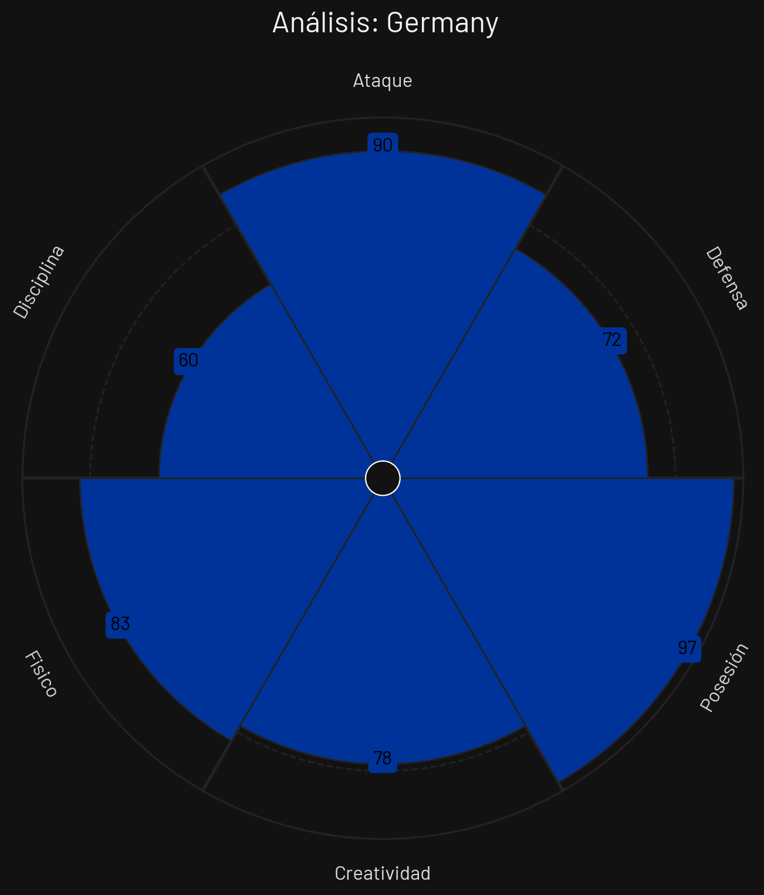
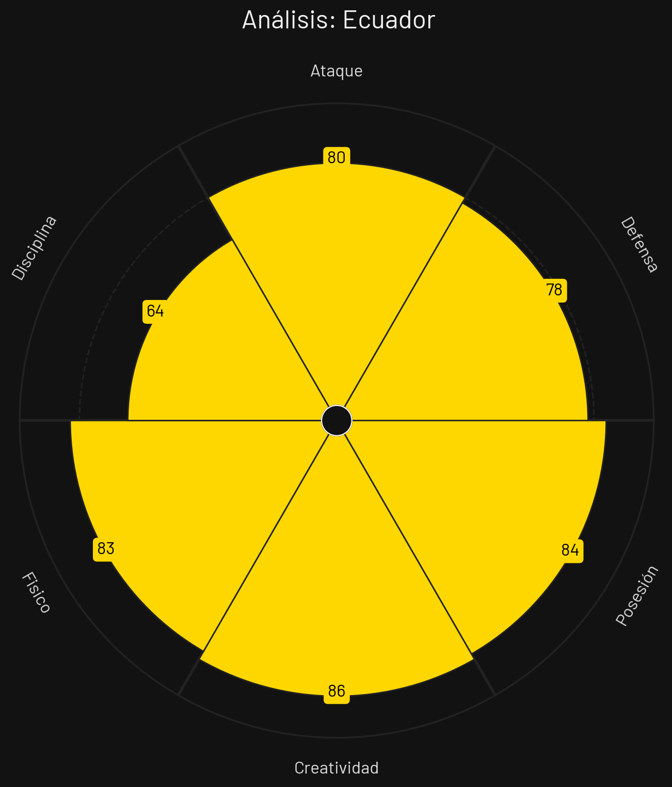
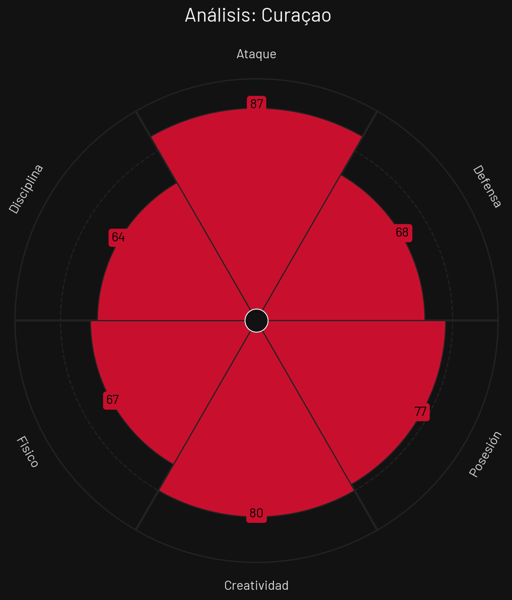

Alemania

Estilo de Juego e Influencia
Presión en bloque alto extremo, combinación rápida en zona 14, rotación constante de mediapuntas y amplitud por laterales.
- Formación Base: 4-2-3-1 / 3-4-2-1
- xG Promedio: 2.18 por 90 min
- Zona de Presión: Bloque Alto (PPDA 7.0)
- Jugador Clave: Jamal Musiala
Ecuador

Estilo de Juego e Influencia
Transición ofensiva-defensiva de altísima potencia física, control del mediocampo por presión intensa y desdoble veloz de carrileros.
- Formación Base: 3-4-3 / 4-3-3
- xG Promedio: 1.70 por 90 min
- Zona de Presión: Bloque Alto (PPDA 8.7)
- Jugador Clave: Moisés Caicedo
Costa de Marfil

Estilo de Juego e Influencia
Físico imponente en duelos de mediocampo, solidez en bloque defensivo coordinado y transiciones rápidas mediante extremos habilidosos.
- Formación Base: 4-3-3
- xG Promedio: 1.35 por 90 min
- Zona de Presión: Bloque Medio (PPDA 9.8)
- Jugador Clave: Franck Kessié
Curazao

Estilo de Juego e Influencia
Defensa pasiva baja protegiendo carriles centrales y salidas rápidas con balón largo a espaldas de defensores adelantados.
- Formación Base: 4-2-3-1
- xG Promedio: 0.90 por 90 min
- Zona de Presión: Bloque Bajo (PPDA 12.8)
- Jugador Clave: Juninho Bacuna
Análisis Técnico: Grupo E - Mundial 2026
Basándome en los perfiles tácticos proporcionados, presento un análisis técnico detallado de los equipos del Grupo E:
📊 Comparativa General de Atributos
| Atributo | ||||
|---|---|---|---|---|
| Ataque | 90 | 80 | 82 | 87 |
| Defensa | 72 | 78 | 82 | 68 |
| Posesión | 97 | 84 | 61 | 77 |
| Creatividad | 78 | 86 | 84 | 80 |
| Físico | 83 | 83 | 93 | 67 |
| Disciplina | 60 | 64 | 58 | 64 |
🔍 Análisis por Equipo
ALEMANIA
Fortalezas
- Ataque por el Centro (86): Creatividad extrema con Musiala y volantes.
- Presión Alta (84): Recuperación inmediata en zona de salida rival.
- Volumen de Juego (85): Posesión dominante con ritmo fluido.
Debilidades
- Repliegue a Espaldas (72): Susceptibilidad a pases largos cuando están adelantados.
Estrategia: Dominar el partido en campo rival, acumular hombres por dentro para combinar rápido y presionar al instante de perder el balón.
ECUADOR
Fortalezas
- Intensidad Física (86): Potencia descomunal en duelos de mediocampo.
- Salida en Transición (80): Carrileros veloces que llegan a línea de fondo.
- Compacto Defensivo (81): Tres centrales de gran nivel asociativo.
Debilidades
- Finalización Fina (71): Inconsistencias ocasionales en la definición en el área.
Estrategia: Ejercer una marca muy asfixiante sobre el mediocentro rival, recuperar el esférico y verticalizar rápidamente por carriles externos.
COSTA DE MARFIL
Fortalezas
- Mediocampo Físico (82): Kessié y acompañantes ganan muchos duelos.
- Velocidad en Bandas (77): Extremos rápidos que encaran 1 contra 1.
- Eficacia en Balón Parado (76): Centrales con gran presencia física.
Debilidades
- Control de Ritmo (68): Sufrimiento cuando el rival baja el balón y toca lento.
Estrategia: Establecer una muralla en mediocampo, cortar y salir rápido por los costados aprovechando desequilibrios individuales.
CURAZAO
Fortalezas
- Repliegue Cerrado (74): Defienden juntos en los últimos 30 metros.
- Transición Directa (71): Balones largos a espaldas de centrales.
- Entusiasmo Debutante (75): Sin presión, motivados al máximo.
Debilidades
- Organización Bajo Presión (60): Propensión al error si los presionan en su área.
- Falta de Recambios (58): Plantilla con poca profundidad para torneos cortos.
Estrategia: Esperar en campo propio compactando las líneas y lanzar pelotazos a los costados para desbordar por sorpresa.
⚔️ Matchups Clave
🏆 Proyección del Grupo
Clasificación Esperada:
🧠 Análisis Táctico Avanzado
A continuación, se presenta un análisis técnico y cuantitativo del **Grupo E** para el Mundial de Fútbol 2026, evaluando las virtudes, debilidades y el enfoque estratégico de cada selección a partir de sus perfiles estadísticos.
🔍 Análisis Perfil por Perfil
1. Alemania
Al examinar el archivo `PerfilTacticoAlemania.png`, el combinado europeo se consolida como el núcleo monopolizador del balón en este sector.
- Fortaleza principal: Un absoluto y extraordinario control del ritmo de juego a través de la circulación (97 en Posesión), complementado por una línea ofensiva de élite (90 en Ataque) y un notable sustento atlético (83 en Físico).
- Área de mejora: El equilibrio defensivo y la templanza. Su registro en Defensa (72) y su baja Disciplina (60) sugieren un equipo que arriesga demasiado al adelantar líneas, lo que podría dejarlos vulnerables ante contragolpes letales.
2. Costa de Marfil
De acuerdo con los datos del archivo `PerfilTacticoCostaDeMarfil.png`, la escuadra africana propone un fútbol de altísima intensidad, poder de choque y transiciones dinámicas.
- Fortaleza principal: Un despliegue atlético descomunal (93 en Físico), muy bien acompañado por un equilibrio perfecto en ambas áreas (82 tanto en Ataque como en Defensa) y una gran inventiva en tres cuartos de cancha (84 en Creatividad).
- Área de mejora: El control del partido. Con una Posesión de 61 y una alarmante falta de Disciplina (58, la más baja del grupo), es un equipo propenso a caer en el caos táctico, cometer faltas constantes en zonas críticas o sufrir expulsiones.
3. Ecuador
El desglose del archivo `PerfilTacticoEcuador.png` revela a la selección sudamericana como el conjunto conceptualmente más equilibrado, asociativo y versátil del sector.
- Fortaleza principal: Su fluidez de ideas en la generación de juego (86 en Creatividad) apoyada por una excelente capacidad para resguardar y distribuir la pelota (84 en Posesión). Además, cuentan con un bloque físico robusto (83).
- Área de mejora: La falta de una métrica marcadamente dominante. Aunque rozan el notable en casi todas sus facetas (como su 80 en Ataque y 78 en Defensa), carecen de un rasgo "extremo" que rompa partidos por pura inercia.
4. Curazao
Al analizar el archivo `PerfilTacticoCurazao.png`, el conjunto caribeño se planta en la justa mundialista con un perfil marcadamente ofensivo, directo y sin complejos al atacar.
- Fortaleza principal: Un arsenal ofensivo sumamente respetable (87 en Ataque) potenciado por buenos niveles de imaginación (80 en Creatividad) y un aseado trato del balón (77 en Posesión).
- Área de mejora: Su estructura de contención. Con la Defensa más endeble del grupo (68) y un fondo físico limitado (67), sostener la intensidad defensiva durante los 90 minutos ante potencias físicas o de posesión será su reto más complejo.
⚡ Dinámica Táctica del Grupo
El Grupo E exigirá pizarras flexibles debido a la marcada oposición de estilos: